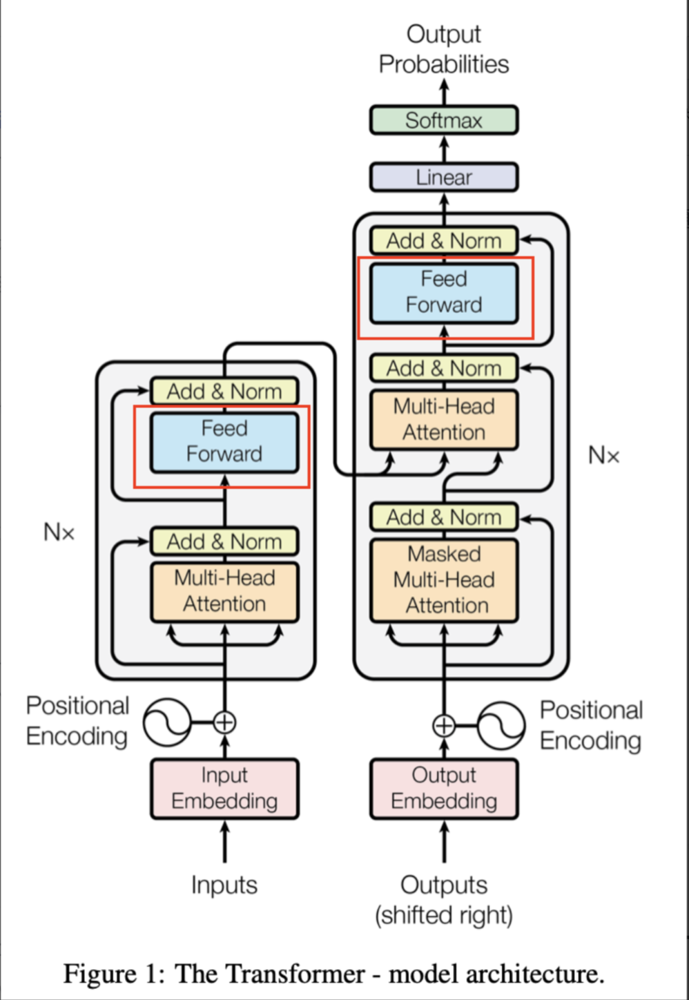

前馈网络和激活函数¶
FFN计算的本质是通过线性变换和非线性激活函数，逐步学习并映射输入特征到更高维的特征空间，从而增强模型的表达能力

当然可以，以下是对原图内容的简化与专业化整理，保持核心意思不变：
FFN（Feed-Forward Network）概述¶
什么是 FFN？¶
FFN（Feed-Forward Network，前馈神经网络） 是 Transformer 模型中的关键组成部分，通常紧接在自注意力（Self-Attention）或交叉注意力（Cross-Attention）层之后。
它的主要作用是：
- 对注意力机制输出的特征进行非线性变换
- 增强模型的表达能力
- 实现对输入表示的进一步加工和抽象
FFN 的结构¶
典型的 FFN 结构由两个全连接层（线性变换）组成，中间加入激活函数。其结构如下：
其中：
x是输入向量（来自注意力层的输出）W1,W2是权重矩阵b1,b2是偏置项ACT是激活函数，如 ReLU、GELU 等
通常第一个线性层会将维度提升到更高（例如 4 倍），第二个再压缩回原始维度。
FFN作用：进一步对注意力输出进行非线性变换和特征抽取。
FFN为什么增加隐藏层维度？¶
FFN的中间层使用比输入向量更高的维度（输入向量的\(d_{model}=512\)，而中间层维度往往是2048）.这样可以让 网络学习到更丰富、更复杂的特征表示，对模型性能有明显提升。
基础FFN和激活函数¶

标准FFN结构¶
原版transformer中，FFN由两个线性层（全连接层）和一个激活函数（默认为ReLU）组成，结构如下：
1.第一层全连接层（线性变换）：
其中，\(W_1\)是权重矩阵，\(b_1\)是偏置向量，\(W_1\)的输出维度比输入向量x的维度\(d_{model}\)大很多。（一般是四倍）
2.激活函数
激活函数可换成，GeLU、Swish等
3.第二层全连接层（线性变换）：
其中,\(W_2\)的输入维度与z相同，输出维度回归到\(d_{model}\),方便后续与其他子层做加法和拼接等操作。
这里，\(W_1,W_2,b_1,b_2\)都是可学习参数。
注意：不同的激活函数对模型表达能力、收敛速度和梯度流等会产生影响
常见激活函数¶
ReLU¶
- 优点：计算简单，速度快
- 缺点：当输入小于0时，输出恒为0，会导致某些神经元在训练过程中一直输出“0”,称之为“神经元死亡问题”。

Sigmoid¶

- 优点：输出范围在（0,1），可当做开关
- 缺点：易出现梯度饱和，计算贵一点
相比于ReLU，Sigmoid涉及到指数运算和除法，计算复杂度更高
Tanh¶
- 优点：输出范围（-1,1），比Sigmoid更不易饱和
- 缺点：依然有可能饱和，使得梯度变小，不易训练

下面详细介绍GeLU和Swish这两种使用多的激活函数
GeLU¶
GeLU（Gaussian Error Linear Unit）最早在一些预训练语言模型（如 BERT）中开始流行，是一种在性能上往往优于 ReLU 的激活函数。它的形状是一个平滑的 S 型曲线，相比 ReLU，更能平滑地“选择”对负值进行保留还是裁剪。

以下是GeLU近似形式(写代码常用)：
GeLU和ReLU的区别
- 平滑性：GeLU是平滑曲线，而ReLU在x=0处存在拐点，梯度不连续。
- 负值处理：ReLU 对所有负值直接输出 0；GeLU 则会给负值以一定概率保留，避免“神经元死亡”问题。
- 计算开销：ReLU 是极其简单的分段函数，GeLU 则包含了
tanh等函数，计算要更复杂，也更耗时一些。 - 应用场景：ReLU 更适合使用在卷积神经网络（CNN）中，而 GeLU 更适用于全连接网络（FNN）。
Swish¶

Swish 是由 Google 的自动搜索激活函数的方法得到的一种激活函数，当 \( \beta \) 为 1 时的 Swish 激活函数也称作 SiLU（Sigmoid-Linear Unit）。它的公式如下：
通常 \( \beta \) 可以设置为 1，简化为：
其中，\( \sigma(\cdot) \) 是 Sigmoid 函数。
特点
- 平滑过渡：与 GeLU 类似，Swish 在负值区域依然有小幅输出，且函数呈平滑曲线。
- \( \beta \) 的作用：\( \beta \) 可以调整函数形状。当 \( \beta = 1 \) 时，Swish 的曲线与 GeLU 也相近；\( \beta = 0 \) 时就变回线性函数 \( x \)；\( \beta \to \infty \) 时则趋近 ReLU。
- 计算开销：Swish 需要一次 Sigmoid 计算，比 ReLU 耗时稍高，但通常仍小于 GeLU 的复杂度。
- 应用：在图像处理和自然语言处理中都开始逐渐流行，部分 Transformer 变体使用 Swish 来替换 ReLU。
基于GLU的FFN块计算公式¶
GLU是一种门控机制，将全连接输出分为两部分：一部分是负责主干输出 ，另一部分通过一个门控函数（通常是Sigmoid或其它激活函数）来选择性地 “保留”或抑制信息。有助于增强模型表示能力，最简单GLU块可表示：
\(\odot\)为对应位置上元素两两相乘，F是任意激活函数（原论文是Sigmoid）
优点：在不同维度上，对输入的信息选择性保留或屏蔽。相比单纯激活函数，GLU机制更灵活。
缺点：增加一些线性映射和门控操作，计算量大
GeGLU¶
GLU可以结合GeLU激活函数：
不过未能明确激活和门控路径，容易导致参数混乱，激活函数也可用来做门控。
为了维度兼容，实际公式是：
与Sigmoid版本的GLU相比，把门控函数换成GeLU:
- 在负值到正值的过渡更平滑，不像Sigmoid那样硬性的（0,1）输出
- 给网络更多表达能力，计算也复杂一些
在代码中只需要把激活函数从sigmoid()换成GeLU()即可。
SwiGLU¶
另外一种常见的组合方式是将GLU与Swish结合(LLaMA系列)：
为了维度兼容，计算公式是：
在这种场景下，“门控向量”来自于Swish(W_1*x),其计算如下：
如果不强调\(\beta\),默认为\(\beta =1\)
这样可以赋予网络平滑的门控选择能力。
实现代码（为了保持参数量不变，当前维度变为之前的⅔）

不同FFN模块对比¶
1.经典FFN
2.FFN+GeLU
3.FFN+Swish
4.GLU-based FFN
5.GeGLU
6.SwiGLU
为什么会出现 GLU 变体？¶
- 门控机制的优势：相比简单的激活函数，GLU 有了对每个通道或维度进行“开”或“关”的能力。
- 不同激活函数的选择：Sigmoid 可以把输出收敛到 (0, 1) 之间，GeLU 和 Swish 则在负值区间也会平滑地衰减或保留信息。
- 模型容量与计算平衡：有时候引入更强的激活或门控机制能提升模型表现，但也会带来额外的计算成本，应根据数据规模、任务需求选择合适的激活函数和变体。
实际应用与性能对比¶
ReLU vs. GeLU vs. Swish¶
- 速度：ReLU 最快，Swish 次之，GeLU 较慢（因为 GeLU 的实现比较复杂）。
- 性能：在 NLP 任务上，GeLU 与 Swish 往往能在一定程度上优于 ReLU，尤其在大规模预训练模型中。
- 稳定性：ReLU 有神经元死亡问题，GeLU、Swish 的输出更平滑，但也需要更多计算。
GLU 或者 “激活 + GLU”¶
- 优点：增强表示能力，对信息选择更精细，有时能带来性能收益。
- 缺点：计算量更大，参数量也可能更多；在数据规模不大时，可能出现过拟合或收益不明显。
如何选择？¶
- 小规模任务/资源有限：可以先用 ReLU 或者 Swish，实现简单、速度快。
- 大模型/追求极致性能：可以尝试 GeLU 或者带门控机制的 FFN（比如 GLU + GeLU），在大规模数据上可能会有收益。
总结¶
- FFN（Feed-Forward Network） 是 Transformer 中最重要的模块之一，与注意力机制协同工作。通过增大中间层维度并引入非线性激活，FFN 能大大提升模型的表达能力。
- 激活函数 在 FFN 中不可或缺，决定了模型的非线性和梯度流动。除了最常见的 ReLU，GeLU 和 Swish 等平滑激活在大型预训练 Transformer 中也很受欢迎。
- GLU（Gated Linear Unit） 给 FFN 带来了门控机制，可进一步提升网络选择性保留信息的能力。与不同激活函数结合（Sigmoid/GeLU/Swish）能在不同场景带来性能增益。